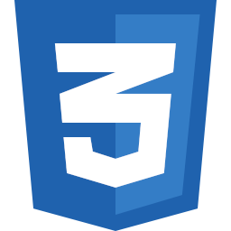

DESARROLLO WEB FRONT-END

HTML -Lenguaje de Marcado para Hipertextos (HyperText Markup Language)- es el elemento de construcción más básico de una página web y se usa para crear y representar visualmente una página web. Determina el contenido de la página web, pero no su funcionalidad. Otras tecnologías distintas son usadas para describir la apariencia/presentación de una página web (CSS) o su funcionalidad (JavaScript).

CSS3 es la última evolución del lenguaje de las Hojas de Estilo en Cascada (Cascading Style Sheets), y pretende ampliar la versión CSS2.1. Trae consigo muchas novedades altamente esperadas, como las esquinas redondeadas, sombras, gradientes, transiciones o animaciones, y nuevos layouts como multi-columnas, cajas flexibles o maquetas de diseño en cuadrícula (grid layouts). . No es una especificación cerrada.

JavaScript (JS) es un lenguaje ligero e interpretado, orientado a objetos con funciones de primera clase, más conocido como el lenguaje de script para páginas web, pero también usado en muchos entornos sin navegador, tales como node.js, Apache CouchDB y Adobe Acrobat. Es un lenguaje script multi-paradigma, basado en prototipos, dinámico, soporta estilos de programación funcional, orientada a objetos e imperativa.